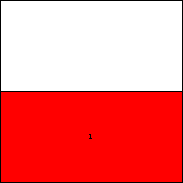
s = 2
Trivial.
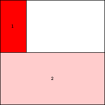
s = 4
Trivial.
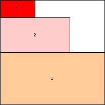
s = 6
Trivial.
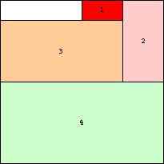
s = 8
Trivial.
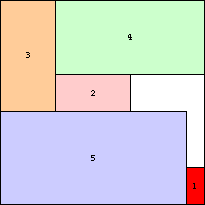
s = 11
Found by Erich Friedman in 1998.

s = 14
Found by Erich Friedman in 1998.
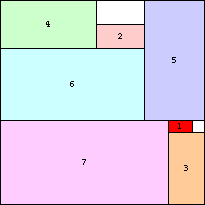
s = 17
Found by Erich Friedman in 1998.
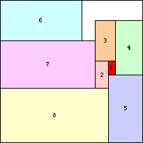
s = 21
Found by Erich Friedman in 1998.
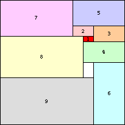
s = 24
Found by Erich Friedman in 1998.
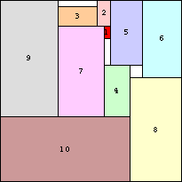
s = 28
Found by Erich Friedman in 1998.
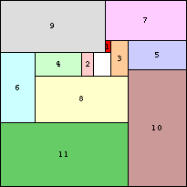
s = 32
Found by Erich Friedman in 1998.
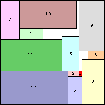
s = 37
Found by Erich Friedman in 1998.
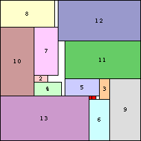
s = 41
Found by Erich Friedman in 1998.
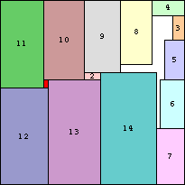
s = 46
Found by Erich Friedman in 2004.
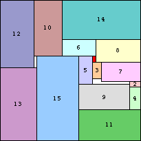
s = 50
Found by Erich Friedman in 2004.
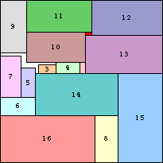
s = 55
Found by Erich Friedman in 2004.
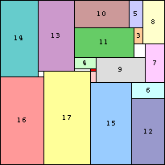
s = 60
Found by Erich Friedman in 2004.
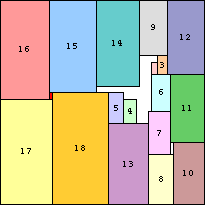
s = 66
Found by Erich Friedman in 2004.
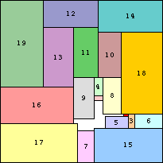
s = 71
Found by Erich Friedman in 2004.
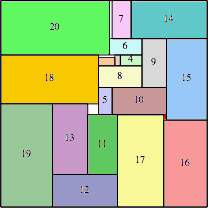
s = 76
Found by Maurizio Morandi in 2014.
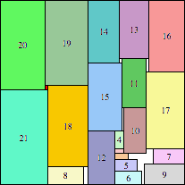
s = 82
Found by Erich Friedman in 2014.

s = 88
Found by Erich Friedman in 2014.
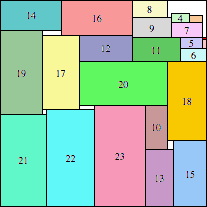
s = 94
Found by Erich Friedman in 2014.
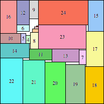
s = 100
Found by Erich Friedman in 2014.